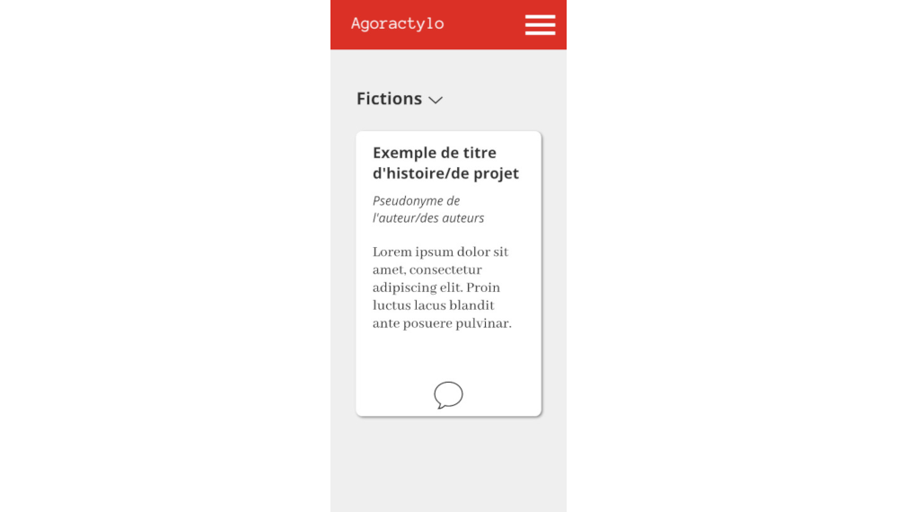
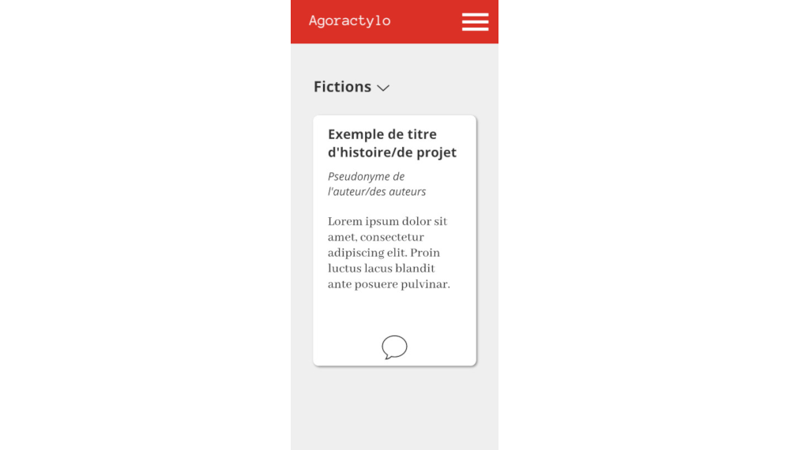

Agoractylo Une application Angular 5 sur le modèle MEAN Stack

 

Description du projet
Agoractylo est un projet d'application d’écriture collaborative. Contrairement à des outils comme Framapad où l’on édite directement un fichier texte à plusieurs, Agoractylo fonctionne sur le principe de la suggestion.
Un utilisateur met en ligne sur l’application un texte de fiction. Une fois le texte, ou le « projet » publié, les autres utilisateurs peuvent entamer une suggestion concernant un aspect du texte publié, une suggestion est tout d’abord une entité qui peux être votée positivement ou négativement ou encore être « étoilé » par la communauté qui travaille sur le projet, cette même communauté peut échanger et débattre sur une suggestion précise en répondant à la suggestion qui se transforme alors en fil de discussion. L’accueil de l’application affiche l’ensemble des projets sans discrimination, les projets dont le titre et l’icône bulle sont rouge signifie juste que le projet et sa communauté sont très actifs.
Il est possible de recherche un projet particulier au travers de la barre de recherche présente sur l’accueil, à l’avenir, l’usage de mots clefs sera possible afin de rechercher un genre littéraire particulier.
Présentement Agoractylo ne dispose que d’une seule catégorie de projets, les fictions, rangées dans un « tiroir » ou « accordéon » sur la page d’accueil, on peut imaginer à l’avenir voir apparaître des catégories telles que les documents professionnels ou administratifs pour une aide à la rédaction ou encore préciser les style littéraire en y ajoutant des catégories propre à l’écriture de scénario ou de théâtre. Sur la droite est visible une barre disposant d’icônes, qui se déroule en cliquant sur l’icône option (le rouage)
Ce menu permet d’accéder à l’ensemble des options dont dispose Agoractylo, permettant d’afficher les projets de l’utilisateur ou de voir les projets les plus actifs. Un utilisateur non inscrit peu accéder à l’ensemble du contenu d’Agoractylo mais ne pourra pas interagir avec.
En l’état actuel des choses, le prototype de cette application est incomplet et l’ensemble des fonctionnalitées basiques ne sont pas encore fonctionnelles.
Pour l’instant, les fonctionnalitées d’authentification telles que l’inscription, la connexion et la déconnexion sont fonctionnelles malgré quelques bogues persistant. Les projets stockés en base de données peuvent s’afficher sur l’accueil, et la fonction pour l’utilisateur d’afficher SES projets n’est pas aboutie.
L’édition du compte n’est pas parfaitement fonctionnelle et renvoi encore des erreurs, mais est déjà avancée.
Les fonctionnalitées de tri n’ont pas étés développées dans le délai imparti.
Technologies utilisées dans ce projet
- Angular 5
- NodeJS
- MongoDB
- HTML
- CSS
- UX/UI Design